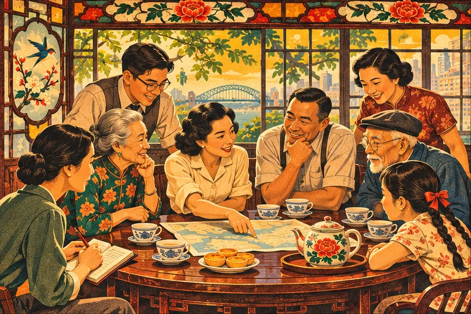

澳洲广府人（珠玑）联谊总会
澳洲广府人（珠玑）联谊总会在悉尼联络各州广府社团，开展大会筹备与文化交流。

总会从哪里来
旅澳广府乡亲、珠玑巷后裔及侨团人士共同发起总会。会名中的「珠玑」，指广东南雄珠玑巷，承载许多广府家族南迁的记忆。创会时，乡亲把族谱交流列入庆典安排，希望下一代在澳洲也能追寻家族的来路。
总会联络澳洲各地广府社团，组织粤语文化活动，也为中澳两地的社区、教育、科技及经贸交流牵线。十周年会庆上的图片回顾展，记录了这些工作如何从一次次探访和聚会展开。

社团与文化活动
广东省广府人珠玑巷后裔海外联谊会、澳洲广府人（珠玑）联谊总会、广州演艺人协会及环球康养旅居平台共同参与「粤唱粤强」赛事。第六届大会的完整机构名单，仍待正式会务资料公布。
青年与商务联络
澳洲总会在 2026 年 6 月发布会上宣布成立青年部与商务部。青年部着重青年参与及文化传承，商务部着重联系广府工商界、促进经贸交流。
据 2026 年 6 月 13 日发布会报道，总会现有 61 个成员社团。
总会大事记
2014 · 悉尼市政厅成立大会
9 月 9 日，旅澳广府乡亲在悉尼市政厅举行成立大会。黎子流率广东代表团到场祝贺，中澳两地逾 600 位来宾出席。
2016 · 在澳洲记录肇庆侨史
6 月，肇庆市侨史研究访问团到澳洲搜集文献与口述线索。时任总会理事长黄汉元与当地侨界人士一同参加座谈，交流肇庆乡亲在澳洲的生活与发展。
2017 · 悉尼澳中商务交流峰会
2 月 17 至 18 日，总会与广东省广府人珠玑巷后裔海外联谊会在悉尼联合举办商务峰会。两地企业界代表及其他嘉宾逾 500 人到会交流。
2024 · 十周年会庆
9 月 9 日，总会在悉尼以图片展回顾十年会务。康小红在当晚致辞中介绍，当时总会有 51 个会员社团。总会向社团代表及历届获广府人杰出人才荣誉的澳洲代表颁发纪念旗。
2025 · 从韶关接过会旗
11 月 25 日，第五届世广会上，康小红与澳洲团队代表悉尼接旗。对总会而言，这是一项新任务：把在广东相聚的各地乡亲迎到悉尼。
2026 · 悉尼筹备启动
6 月 13 日，总会召开新闻发布会，公布第六届大会计划于 2027 年 10 月在悉尼举行。会上还宣布启动第二届「粤唱粤强」南太平洋赛区，并成立总会商务部与青年部。
在广州谈澳洲长者关心的事
据广州日报 2025 年 12 月报道，康小红、江念慈参与在广州举行的环球康养旅居交流座谈会。与会者讨论往返中澳的长者怎样衔接旅居、健康服务与养老资源，也谈到实地考察和保障机制。
公开报道中的会务人物
以下职务和分工以 2026 年 9 月 12 日「粤韵南洋 · 慈善同行」发布会媒体资料为准。
康小红 JP · 澳洲广府人（珠玑）联谊总会会长
担任系列活动总召集人、总策划。她在 6 月筹备发布会上公布了 2027 悉尼大会的计划月份。9 月系列活动发布会上，由岑吕蕙兰代表她致意。
江念慈 OAM · 澳洲广府人（珠玑）联谊总会理事长
担任系列活动主席及「粤唱粤强」南太平洋赛区主席，在发布会上介绍第二届赛事和各分赛区安排。
岑吕蕙兰 · 澳洲广府人（珠玑）联谊总会执行会长
担任系列活动大会监事长，主持 6 月 13 日筹备发布会和 9 月 12 日发布会，并在 9 月发布会上代表康小红向到场嘉宾致意。
陈日坤 · 澳洲广府人（珠玑）联谊总会常务副会长
担任系列活动执行主席及社区支援慈善基金会主席，负责介绍失智症健康科普讲座、慈善演唱会与关爱长者的筹款安排。
回顾 11 月 6 日市政厅活动 · 2AC 澳洲中文广播电台 · 9 月 12 日发布会报道 · 环球康养旅居平台 · 6 月 13 日悉尼筹备发布会 · 今日悉尼 · 6 月 13 日悉尼筹备发布会